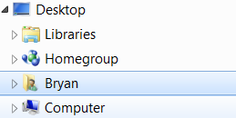
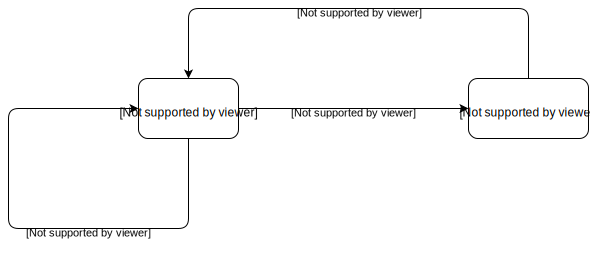
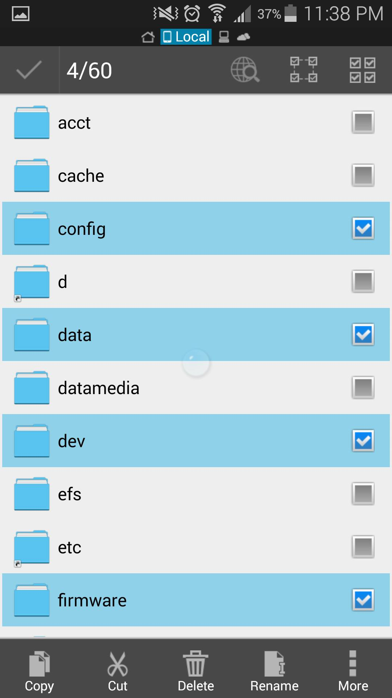
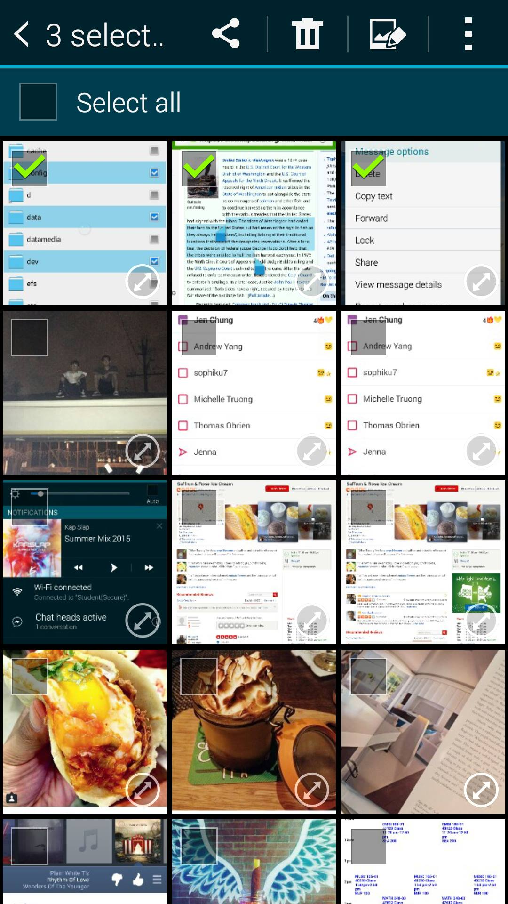

Typical Appearance


- 

Typical Behavior
Since selection of text, web elements, files, images, etc. is a relatively common task, there is a consistent behavior associated with it across multiple platforms. When a user selects an item, it is usually highlighted in a different color; most major platforms and operating systems as of 2016 utilize a blue-on-white color scheme by default, though some allow users to configure personalized color schemes or install themes that alter many such aesthetic features.
Many types of items and elements may be selected in different computer environments. With text, for example, the cursor turns into a specialized text cursor (the appearance of which depends upon both the platform and software, but typically resembles a capital Roman letter "I") as the mouse hovers over it. When the user left-clicks and drags the mouse over the desired text to select, the choosen characters highlight in a different color. On mobile platforms, a long press will usually highlight the entire selected word by default, with "handle" tooltips appearing at each end of the selection for further adjustment. For items such as folders and files or apps, the user will typically see a dim highlight encapsulating items as they mouse or hover over them. If the user chooses to select an item, clicking on or touching it causes the dim highlight to change to a more opaque one, signifying the selection as a focus of attention.
There are also different methods of selecting, notably when paired with the Shift and Ctrl/Command (⌘) keys on a computer keyboard. When using the Shift key while selecting, the user can click first on the point to begin the selection, and then use a second click to signify where to end the selection. When using the Ctrl or Command key while selecting, the user can click on separate items to group them as a single selection.
Events
A selecting event is simply the process of clicking or drag-clicking text or items on the screen.
Commonly there are to select one item, the user would click on desired item and thus the item is selected. However if the user wanted to select multiple items, the user would have to drag-click and highlight the section of text or items the wish.
State Diagram

Component in Action
Checkbox Selection
List selection. Hold Shift or Ctrl/Command (⌘) while clicking to select multiple options.
Text-Selection: Click and drag the text to see it highlight.
YouTube demonstrations explaining how to select multiple files and folders:
Variants
Component in Action
Checkbox Selection
List selection. Hold Shift or Ctrl/Command (⌘) while clicking to select multiple options.
Text-Selection: Click and drag the text to see it highlight.
YouTube demonstrations explaining how to select multiple files and folders:
Variants
There are many variations of what is selectable and how to select it. There are three main variations.
Text Selecting
When performing a text selection, the user goes through three actions:
1.) Clicking on-screen where the user would like to begin the selection.
2.) Holding the click and dragging the cursor so the desired text is highlighted.
3.) Releasing the click and finish the selecting.
Folder/File Selecting
When selecting multiple folders/files, a user can use the same methodology as text selection. However, when selecting a single file or folder a user just needs to follow two steps.
1.) Choosing what folder/file to select and hover over it. Notice there a dim highlight surrounds the folder/file.
2.) Click on the desired folder/file. Notice how the dim highlight turned more opaque after clicking.
Checkbox Selecting
When performing a selection on checkboxes, the user goes through two steps.
1.) Choosing which checkbox to select and hover over it. Notice there a dim blue highlight surrounds checkbox.
2.) Click on the desired checkbox. Notice a check has appeared in the box.
Priority Metrics Selecting and its Usability Metrics
Selecting is a basic and universal task a user can perform on almost all user interfaces today: users frequently need to be able to select objects or text in order to perform many important functions, and the ability to move quickly and seamlessly on to the next action is important for usability. Because of this, learnability, memorability, and errors are very important metrics:
- Learnability/Memorability: Due in part to its universal utility and in part to inheritance or design convergence from the original Mac OS, the action of selecting something is very similar across multiple user interfaces. The biggest differences across platforms are in the types of peripheral input/output devices (i.e. mouse, trackball, touchpad, or touch screen) that are available to the user. Because there is a natural mapping between the action and the expected results, a first-time user should be able to intuit how to select an item in any particular system with any particular device. And once a user learns to select something with certain peripherals, it should not be difficult to perform the same task on different platforms, even with a novel input. All of this also lends itself to memorability: if the user has not performed such an action recently, this information should be easily recalled.
- Efficiency/Errors: Selecting is a comparatively simple task, and therefore should be performed seamlessly and flawlessly. It is a necessary prerequisite for many functions or commands such as copying or moving files, and the more efficiently a user can perform the supporting task of selection, the more efficiently a user can continue with the desired high-level task. Errors must be minimized, as errors in selection could lead to such potentially dire consequences as deleting files or overwriting data (though modern computer systems minimize the impact of such errors system-wide by making most of them reversible). The additional selection functionality afforded by the keyboard through the Shift and Ctrl/Command keys give the user appreciably more power to perform tasks efficiently than selecting each of many individual items one at a time. With the selected items or text highlighted in a noticeable, contrasting color after selection, the difference between selected and unselected items is visible to the user, thus reducing errors.
- Satisfaction: While this metric generally does not apply, there are narrow circumstances in which it should be discussed. As a more utilitarian action, users typically do not derive direct satisfaction from selecting items in the user interface - although there could be limited satisfaction from animated or auditory feedback from the action in certain scenarios. There is a definite possibility, however, for negative satisfaction in situations in which the user becomes annoyed or upset if the mechanism for selecting items in the system is not learnable or efficient, or is unduly error-prone.
Key Characteristics
Feedback
Perhaps one most important interaction design principle that selecting something must follow is feedback. Users must never doubt whether:
- they did positively select what they wanted to select
Platform-Specific Instances
Windows 7
Typically in Windows 7, selecting is a very simple task. It supports the three variants of selecting that are detailed above. In the explorer, the user can select through any folder structure, any type of file, and text in any text editor. Windows 7 default color to signify if something is highlighted is blue. However on the desktop a selection of a folder or file is highlighted with a clear outline. These colors are specific to Windows and their operating system. An application that is run in Windows could have a different color to signify a selection. Above in the typical appearances is where some selection is done in Windows 7. Also the addition functions of Shift and Ctrl are allowed in Window 7 where Shift selects from a start and end, while Ctrl allows multiple selections of single targets.
Android ~ 4.4.4 ~ Kitkat
Typically in Android, selecting is different than operating systems like Windows and OSX. It does support the three variants that are explained above. However since there is no mouse the user has to rely on touch. To select a single target, usually the user would have to press and hold until more option pop up. To select multiple targets is the same process however the user would just select more. Selecting on Android 4.4.4 is very seamless and self explanatory. The user knows when something is selected because there more options and menus will pop up in response to the long press.
- 
- 